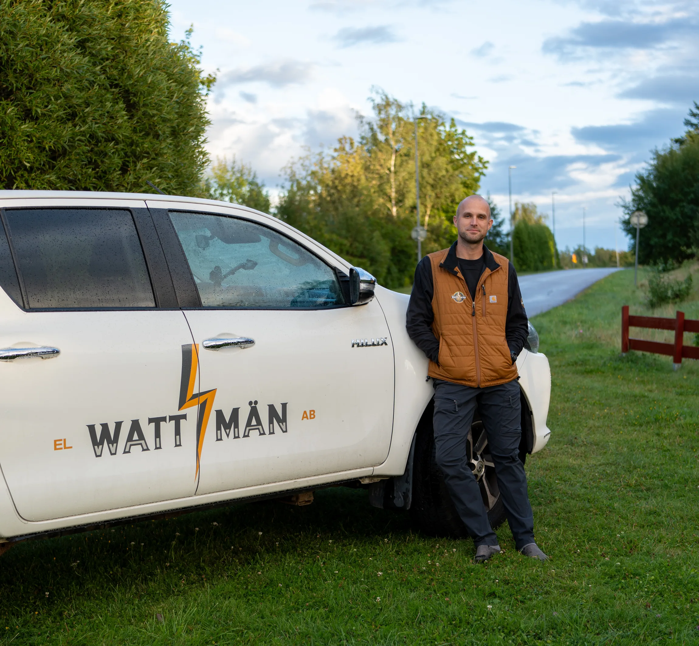
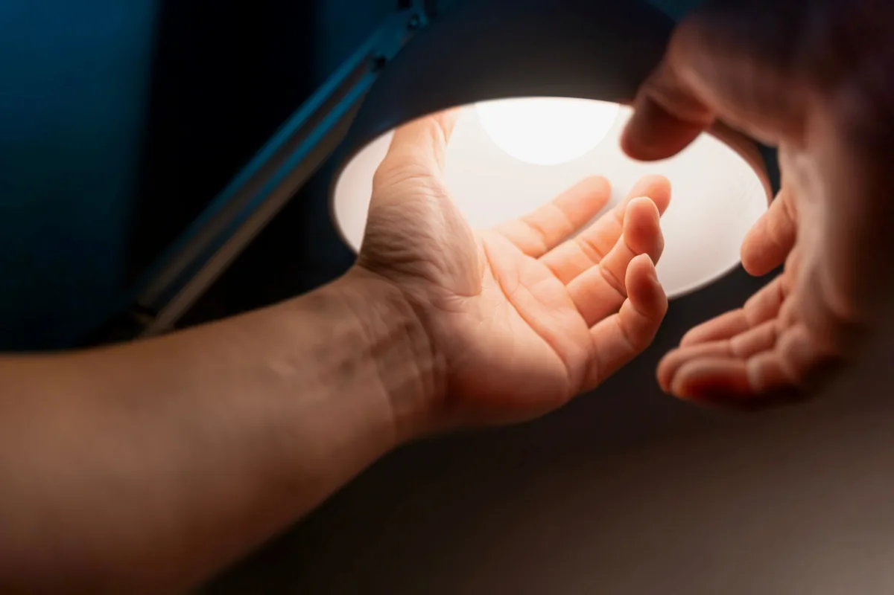
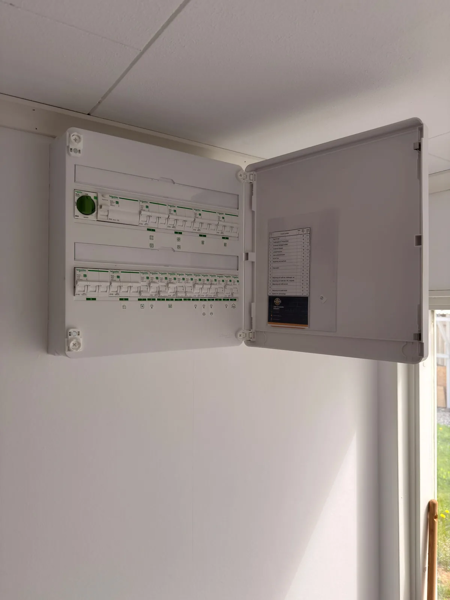
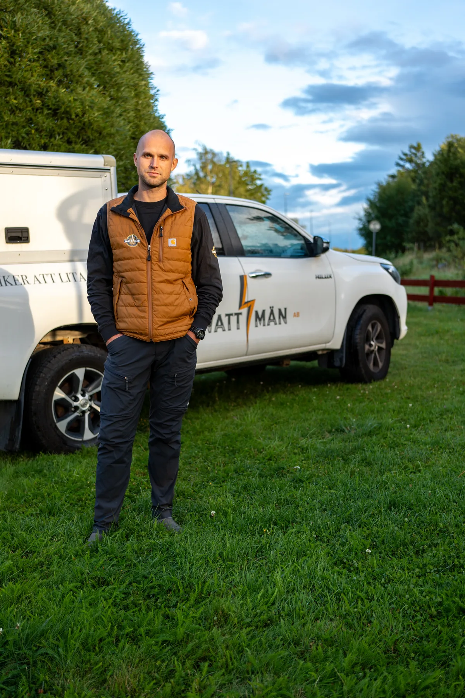

Elektriker · Elservice · EljourElen i ordning.
Google-omdömen
Elen i ordning.
Vardagen igång.
Från ett nytt uttag till elen i hela huset. Vi hjälper dig i Bålsta, norra Stockholm, Uppsala och Västerås.
5,0★★★★★39 kundomdömenGoogle-omdömen
Upptäck våra tjänsterJimmy · Wattmän ElDin elektriker, nära till hands.
Eljour dygnet runtEtt nummer, alla dagar.
Över 10 års erfarenhetKunskap med på varje jobb.
Med bas i BålstaVi kommer till dig.
El som gör skillnadSmå jobb. Stora planer.
Små jobb. Stora planer.
Vi tar hand om elen.
Vad vill du få gjort? Vi hjälper både hem, företag och bostadsrättsföreningar.
Elinstallation
Nya uttag, belysning och el vid renovering.
Felsökning
Vi tar reda på varför elen inte fungerar.
Elcentralsbyte
Uppdatera husets elcentral för dagens behov.
Laddboxar
En laddningslösning hemma eller på jobbet.

Mer ljus.
Rätt installerat.
Rätt installerat.

ELJOUR · 24 TIMMAR · ALLA DAGARElproblem väljer
Elproblem väljer
inte klockslag.
Strömmen borta eller något som inte står rätt till? Ring och berätta vad som har hänt. Vår eljour finns här när du behöver hjälp.

Hej, jag heter Jimmy.Elektrikern bakom Wattmän.
Människan bakom jobbetDet ska kännas
Lär känna Wattmän
Det ska kännas
enkelt att
ringa elektrikern.
Du behöver inte veta vad felet heter. Berätta vad som inte fungerar – eller vad du vill förändra.
På Wattmän möter du erfarenhet och ett personligt engagemang. Vi utgår från Bålsta och hjälper kunder med allt från mindre servicejobb till större installationer.
10+års erfarenhet av el
24/7eljour när det behövs
Kunderna berättar
5,0/5
★★★★★39 Google-omdömen i företagets widget.
Kontrollerat 20 november 2026.
”Är jättenöjd med allt jobb Jimmy gjorde i vårt kök.”Lina CollinGoogle-omdöme via Kundernas.se · 7 april 2026
Fler röster om Wattmän
Här finns viHemma i Bålsta.
Hemma i Bålsta.
På väg till dig.
Vi arbetar i norra Stockholm, Uppsala och Västerås med omnejd. Här kan du läsa mer om några av våra serviceområden.
Se våra områdenBörja med ett samtalVad behöver du
Vad behöver du
hjälp med?
Ett uttag, en renovering eller något större. Vi lyssnar.